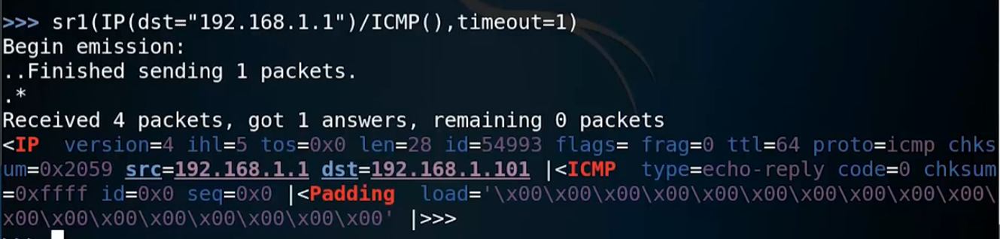

全球排名第二十的工具--scapy
ARP包
- hwtype="硬件类型"
- ptype="协议类型"
- hwlen="硬件地址长度（mac）"
- plen=“软件地址长度（IP）”
- hwsrc=“源mac”如果是在接收的包中，hwsrc是对方的mac，psrc同理
- psrc=“源IP”
- hwdst=“目标mac”
- pdst=“目标IP”
ping包

- 发送ping包需要调用两个函数（IP，ICMP）
- 
SYN包
- TCP协议的SYN请求（三次握手）

- “flags”表示三次握手中的表示位S为SYN包
- 发送SYN包也要在sr1函数中调用两个函数（IP，TCP）
- 收到SYN+ACK包后就断开，属于半开放式扫描，不易被发现
sr1()

- ARP函数用来发送和接收包
- 通过sr1（）命令发送ARP包可以看到对方mac地址，是否开机等信息